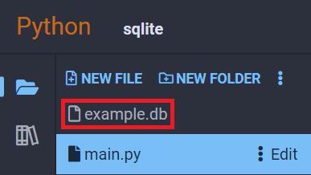

SQLite — Small + Fast SQL Database Engine
SQLite is an SQL database engine that is built into most devices that exist today. Python comes with an SQLite library built in. This library allows you to store data between each time your program is run as well as search through it with queries.
Using SQLite will require the use of Structured Query Language to interface with the database. SQL statements can become very complex quickly, but we will go over some basic commands for creating a table, then adding, reading, and deleting rows of data from it.
Quick Note About SQL Statements
SQL statements are case-insensitive, so the following two statements are the same:
SELECT last_name, first_name, age FROM students WHERE age>15;
select last_name, first_name, age from students where age>15;
Usually key words like SELECT, FROM, WHERE, and so on are capitalized to differntiate them from the custom database table and column names.
Example: Simple Student Roster
Creating a Database and Initializing a Table
Before we store any data, we need to create a table. SQL databases are set up similarly to a spreadsheet, where each entry is a row with data that lines up with named columns.
import sqlite3
conn = sqlite3.connect('example.db')
create_table_sql_str = '''
CREATE TABLE students (
id INTEGER PRIMARY KEY,
last_name TEXT,
first_name TEXT,
age INTEGER,
gpa REAL
);
'''
conn.execute(create_table_sql_str)
print('Table created successfully')
conn.close()
This will create a file named "example.db" in your project's root folder, and it will create a table that is set up like this:
id | last_name | first_name | age | gpa
---------------------------------------
The "id" field we set up is special as it is the INTEGER PRIMARY KEY. This field will automatically increment each time we insert a row into this table.
Note
When you try to open a database that doesn't exist, it will automatically be created and put into your file list. Since we used 'example.db' in our code above, you can see it added in your project's file list to the left:

Inserting Data Into the Table
Now that we have a table, let's write another statement to insert some data into it:
import sqlite3
conn = sqlite3.connect('example.db')
insert_sql_str = '''
INSERT INTO students (last_name, first_name, age, gpa)
VALUES
('Doe', 'John', 16, 3.2),
('Doe', 'Jane', 13, 3.8),
('Smith', 'Ronald', 14, 2.7),
('Aster', 'Jean', 11, 3.4);
'''
conn.execute(insert_sql_str)
conn.commit() # this line actually finalizes the operation and saves to disk
conn.close()
After running this code, your table will now have the following data:
id | last_name | first_name | age | gpa
---------------------------------------
1 | Doe | John | 16 | 3.2
2 | Doe | Jane | 13 | 3.8
3 | Smith | Ronald | 14 | 2.7
4 | Aster | Jean | 11 | 3.4
Note how we didn't specify an id, and it was automatically added for us.
Searching For Specific Students
And now that our table has data from it, we want a specific set of data. Let's run the first example query used at the beginning of this guide:
import sqlite3
conn = sqlite3.connect('example.db')
query_sql_str = '''
SELECT last_name, first_name, age FROM students WHERE age>15;
'''
cursor = conn.execute(query_sql_str)
for row in cursor.fetchall():
print(row)
conn.close()
Output:
('Doe', 'John', 16)
Ordering Query Results
By default, there is no guarantee any data returned by a query will be in any specific order. Most of the time this is ok, but if we need data returned in any specific order, we can do this with the ORDER BY keyphrase:
import sqlite3
conn = sqlite3.connect('example.db')
query_sql_str = '''
SELECT * FROM students WHERE gpa>=3 ORDER BY last_name;
'''
cursor = conn.execute(query_sql_str)
for row in cursor.fetchall():
print(row)
conn.close()
Output:
(4, 'Aster', 'Jean', 11, 3.4)
(1, 'Doe', 'John', 16, 3.2)
(2, 'Doe', 'Jane', 13, 3.8)
Notice how it returned the entire row for each student. That's because we used the * character, which selects all existing columns in order without having to write them out individually.
Update an Existing Row
Sometimes you need to edit a row that is already inserted into the table. You can do this with an update query. Keep in mind that you cannot undo an update after it is committed:
import sqlite3
conn = sqlite3.connect('example.db')
update_sql_str = '''
UPDATE students SET gpa=3.9 WHERE id=3;
'''
conn.execute(update_sql_str)
conn.commit()
conn.close()
After running this code, the student with id=3 will have their GPA updated:
id | last_name | first_name | age | gpa
---------------------------------------
3 | Smith | Ronald | 14 | 3.9
Delete Data from a Table
Final of the main four operations, we can delete a row of data that is no longer needed. Keep in mind that like updates, you cannot undo a delete once it is committed:
import sqlite3
conn = sqlite3.connect('example.db')
delete_sql_str = '''
DELETE FROM students WHERE age=16;
'''
conn.execute(delete_sql_str)
conn.commit()
conn.close()
Our final table looks like this, note how the id column did not get automatically updated:
id | last_name | first_name | age | gpa
---------------------------------------
2 | Doe | Jane | 13 | 3.8
3 | Smith | Ronald | 14 | 2.7
4 | Aster | Jean | 11 | 3.4
We only had one student with an age=16 in our table, but the above query would have deleted all students with age=16. The next student inserted into this table will have an id of 5.
Reference
These examples are far from the only thing you can do with SQLite and SQL queries. Read more about SQLite and SQL queries here:
- Python SQLite Package Documentation at docs.python.org
- SQLite Documentation at sqlite.org